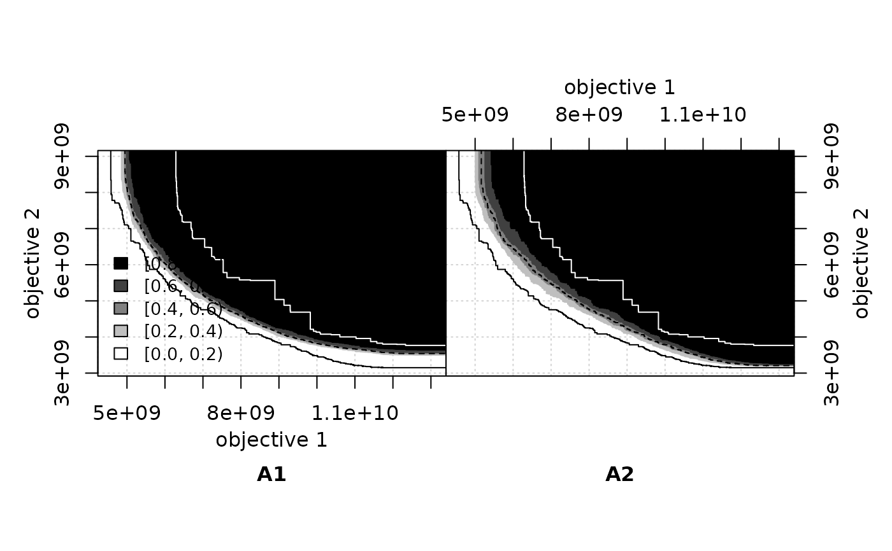
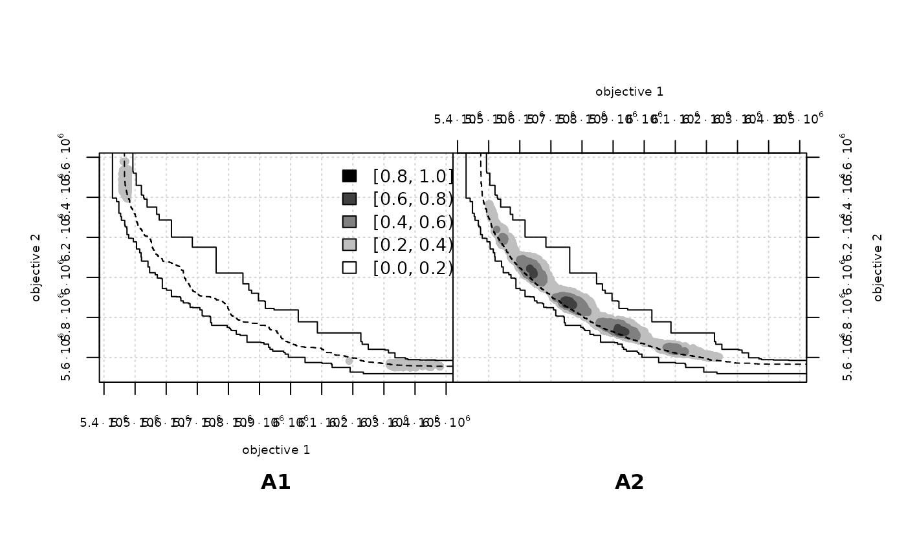

Plot the differences between the empirical attainment functions of two data sets as a two-panel plot, where the left side shows the values of the left EAF minus the right EAF and the right side shows the differences in the other direction.
eafdiffplot( data.left, data.right, col = c("#FFFFFF", "#808080", "#000000"), intervals = 5, percentiles = c(50), full.eaf = FALSE, type = "area", legend.pos = if (full.eaf) "bottomleft" else "topright", title.left = deparse(substitute(data.left)), title.right = deparse(substitute(data.right)), xlim = NULL, ylim = NULL, cex = par("cex"), cex.lab = par("cex.lab"), cex.axis = par("cex.axis"), maximise = c(FALSE, FALSE), grand.lines = TRUE, sci.notation = FALSE, left.panel.last = NULL, right.panel.last = NULL, ... )
Arguments
| data.left, data.right | Data frames corresponding to the input data of
left and right sides, respectively. Each data frame has at least three
columns, the third one being the set of each point. See also
|
|---|---|
| col | A character vector of three colors for the magnitude of the
differences of 0, 0.5, and 1. Intermediate colors are computed
automatically given the value of |
| intervals | ( |
| percentiles | The percentiles of the EAF of each side that will be
plotted as attainment surfaces. |
| full.eaf | Whether to plot the EAF of each side instead of the differences between the EAFs. |
| type | Whether the EAF differences are plotted as points (points) or whether to color the areas that have at least a certain value (area). |
| legend.pos | The position of the legend. See |
| title.left, title.right | Title for left and right panels, respectively. |
| xlim, ylim, cex, cex.lab, cex.axis | Graphical parameters, see
|
| maximise | ( |
| grand.lines | Whether to plot the grand-best and grand-worst attainment surfaces. |
| sci.notation | Generate prettier labels |
| left.panel.last, right.panel.last | An expression to be evaluated after
plotting has taken place on each panel (left or right). This can be useful
for adding points or text to either panel. Note that this works by lazy
evaluation: passing this argument from other |
| ... | Other graphical parameters are passed down to
|
Value
No return value.
Details
This function calculates the differences between the EAFs of two data sets, and plots on the left the differences in favour of the left data set, and on the right the differences in favour of the right data set. By default, it also plots the grand best and worst attainment surfaces, that is, the 0\ over all data. This two surfaces delimit the area where differences may exist. In addition, it also plots the 50\ each data set.
With type = "point", only the points where there is a change in
the value of the EAF difference are plotted. This means that for areas
where the EAF differences stays constant, the region will appear in
white even if the value of the differences in that region is
large. This explains "white holes" surrounded by black
points.
With type = "area", the area where the EAF differences has a
certain value is plotted. The idea for the algorithm to compute the
areas was provided by Carlos M. Fonseca. The implementation uses R
polygons, which some PDF viewers may have trouble rendering correctly
(See
https://cran.r-project.org/doc/FAQ/R-FAQ.html#Why-are-there-unwanted-borders). Plots (should) look correct when printed.
Large differences that appear when using type = "points" may
seem to disappear when using type = "area". The explanation is
the points size is independent of the axes range, therefore, the
plotted points may seem to cover a much larger area than the actual
number of points. On the other hand, the areas size is plotted with
respect to the objective space, without any extra borders. If the
range of an area becomes smaller than one-pixel, it won't be
visible. As a consequence, zooming in or out certain regions of the plots
does not change the apparent size of the points, whereas it affects
considerably the apparent size of the areas.
See also
Examples
extdata_dir <- system.file(package="eaf", "extdata") A1 <- read_datasets(file.path(extdata_dir, "ALG_1_dat.xz")) A2 <- read_datasets(file.path(extdata_dir, "ALG_2_dat.xz")) # These take time eafdiffplot(A1, A2, full.eaf = TRUE)eafdiffplot(A1, A2, type = "area")eafdiffplot(A1, A2, type = "point", sci.notation = TRUE)# A more complex example a1 <- read_datasets(file.path(extdata_dir, "wrots_l100w10_dat")) a2 <- read_datasets(file.path(extdata_dir, "wrots_l10w100_dat")) DIFF <- eafdiffplot(a1, a2, col = c("white", "blue", "red"), intervals = 5, type = "point", title.left=expression("W-RoTS," ~ lambda==100 * "," ~ omega==10), title.right=expression("W-RoTS," ~ lambda==10 * "," ~ omega==100), right.panel.last={ abline(a = 0, b = 1, col = "red", lty = "dashed")})DIFF$right[,3] <- -DIFF$right[,3] ## Save the values to a file. # write.table(rbind(DIFF$left,DIFF$right), # file = "wrots_l100w10_dat-wrots_l10w100_dat-diff.txt", # quote = FALSE, row.names = FALSE, col.names = FALSE)